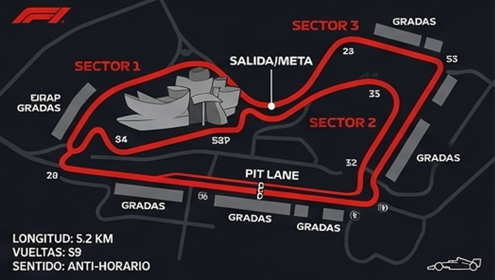
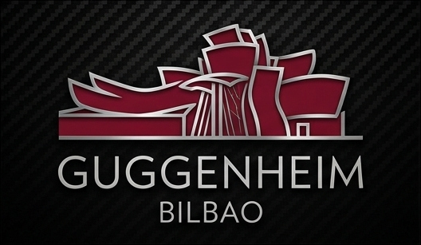

Preparativos en la Ria de Bilbao
Los ingenieros completan el asfalto especial antideslizante cerca del puente de La Salve para garantizar la máxima adherencia.
El circuito urbano de Bilbao acoge la maxima competicion automovilistica mundial con un trazado espectacular junto a la ria, cruzando los puentes mas emblematicos y rodeando el Museo Guggenheim.


Colaboramos activamente con el grupo MR-ROBOT para promover la eliminacion paulatina de los motores de combustion tradicional y la transicion tecnologica hacia motores hibridos ecologicos y eficientes en la Formula 1.
| Dia | Sesion | Hora Local (CET) |
|---|---|---|
| Viernes | Entrenamientos Libres 1 (FP1) | 13:30 - 14:30 |
| Viernes | Entrenamientos Libres 2 (FP2) | 17:00 - 18:00 |
| Sabado | Entrenamientos Libres 3 (FP3) | 12:30 - 13:30 |
| Sabado | Clasificacion Oficial (Q1 - Q3) | 16:00 - 17:00 |
| Domingo | GRAN PREMIO DE EUSKADI (Carrera) | 15:00 |
Los ingenieros completan el asfalto especial antideslizante cerca del puente de La Salve para garantizar la máxima adherencia.
Las gradas de la Tribuna Principal han agotado el 90% de su capacidad en las primeras 48 horas de apertura.
